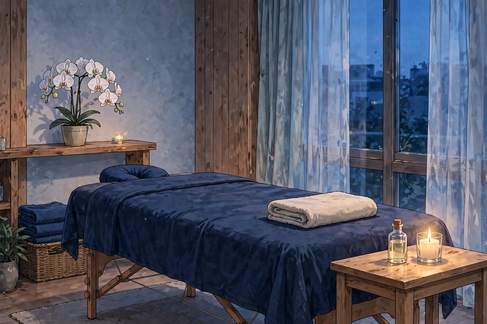
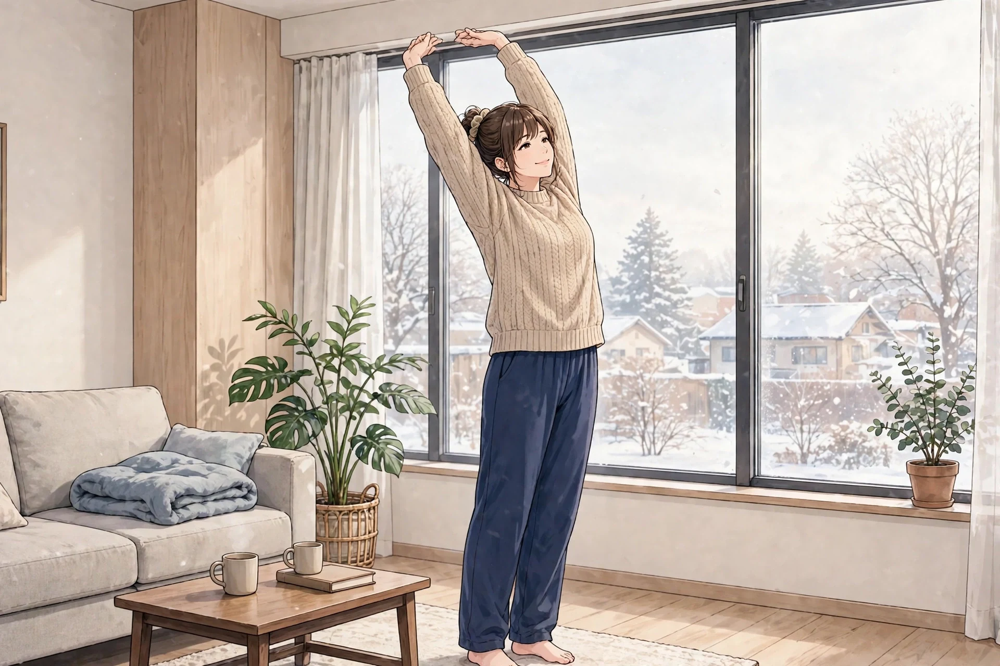

不安解消Q&A2026-11-27
着替えやタオルはどうなっているの？男性セラピストが初めての女性のための服装・タオルワークQ&A｜女性専用サロンで確認したいポイント
男性セラピストの施術を初めて受ける女性から多い「着替えやタオルはどうなっているの？」という質問にQ&Aで回答。当日の服装の選び方、お着替えのときの退室、施術中のタオルワーク、オイルのあとのシャワーまで、女性専用サロンで予約前に確認したいポイントをまとめました。
コラム一覧 ＞ 施術者紹介
施術者紹介2026-11-26

「タントラマッサージって、どんな施術なのだろう」「初めての女性専用サロンで、男性セラピストの施術を受けるのは少し不安」。そんな気持ちを抱えたまま、なかなか予約に踏み切れない方もいるのではないでしょうか。
このコラムでは、大阪・梅田の女性専用サロン「YinYang-Harmony（梅田）」をご紹介します。タントラマッサージ・ヒーリングという施術の考え方と、サロンの雰囲気、料金や場所、予約の流れまで、行く前に知っておきたいことをまとめました。
YinYang-Harmony（梅田）は、タントラマッサージとヒーリングを行う女性専用のサロンです。施術は施術歴30年の男性セラピストが担当し、鍼灸師としての東洋医学の知識を土台にしています。心と体の緊張をほどく、静かで丁寧な時間を大切にしているのが特徴です。
施術では、呼吸を整えながら、体全体をゆっくりとほぐしていきます。強い圧で押すのではなく、その日の体調に合わせて、無理のないペースで進めます。施術の目的は、体をほぐすことそのものではなく、施術を受けたあとに心と体が軽く感じられる時間を過ごしてもらうことです。
なお、梅田の店舗では鍼灸の施術は行っていません。施術の内容や範囲については、施術前に説明があります。初めての方は、施術の前に気になることや不安な点を相談することもできます。
YinYang-Harmony（梅田）は女性専用のサロンです。営業時間は10:00〜20:00で、完全予約制。予約の時間枠は一組ずつで、ほかのお客様と顔を合わせる心配がありません。ゆっくりと自分の時間に向き合える環境が整っています。
安心のための配慮として、施術の前に施術範囲の事前説明を行い、ご希望に沿わない施術は行いません。性的なサービスは一切行いません。施術中に気になることがあれば、その場で伝えることができます。
また、施術を受ける方のペースを大切にしています。無理に話をする必要はなく、静かに過ごしたい方も、気になることを相談したい方も、それぞれの過ごし方ができます。初めての方でも、自分のペースで施術を受けられる仕組みになっています。
メニューはタントラマッサージ・ヒーリングで、90分15,000円／120分20,000円／150分25,000円の3コースです。時間で料金が変わる、明朗な設定です。初めての方は、まず90分コースから試してみるのがおすすめです。
場所は大阪市北区堂山町のレンタルサロンACE梅田内です。中崎町駅から徒歩5分、梅田駅からも徒歩圏内と、仕事帰りや買い物のついでに立ち寄りやすい立地にあります。
支払い方法など、詳しい案内は公式サイトでご確認ください。ポータルでは電話番号を掲載していないため、ご連絡は公式サイトからの文字のやり取りが基本です。文章でゆっくり相談できるので、初めての方でも安心です。
予約は、公式サイトから行います。希望の日時とコースを伝え、確認の返信を受け取って予約が確定します。予約の前に、料金と施術範囲、女性専用・完全予約制といった条件が希望に合うかどうかを確認しておくと安心です。
施術当日は、その日の体調や気になる部位、触れられたくない部位があれば、施術前に正直に伝えてください。体の状態は日によって変わるため、その日の体調を伝えることが、自分に合った施術につながります。
「タントラ」という言葉に、どんな施術なのか分からない不安を感じる方もいるかもしれません。気になることは、予約の前に公式サイトから相談できます。納得してから予約する。そのための材料として、この紹介記事が役に立てば幸いです。梅田で女性専用のサロンを探している方は、店舗ページと大阪府の一覧から、料金や営業時間もあわせてご確認ください。
この記事に関連する本（PR）
この欄にはアフィリエイトリンク（Amazonアソシエイト／楽天アフィリエイト）が含まれます。価格は各リンク先でご確認ください。
男性セラピストの施術を初めて受ける女性から多い「着替えやタオルはどうなっているの？」という質問にQ&Aで回答。当日の服装の選び方、お着替えのときの退室、施術中のタオルワーク、オイルのあとのシャワーまで、女性専用サロンで予約前に確認したいポイントをまとめました。

腰の重さが気になる日に、長時間座る日の体の使い方と、梅田の女性専用サロンで男性セラピストが見る部位、自宅でできるセルフケアを解説。デスクワークや冷えで固まった腰まわりを、無理なくほぐす考え方を施術歴30年の運営者がまとめました。